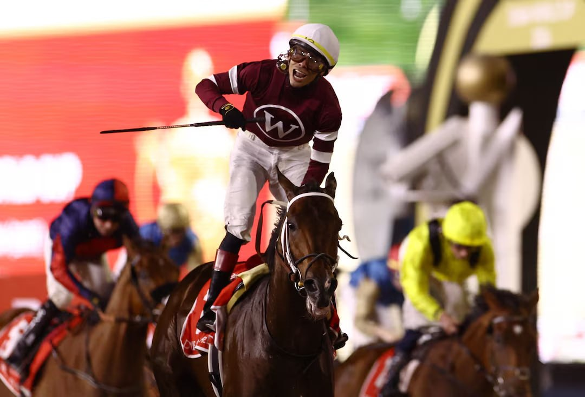

Magnitude viaja a Saratoga tras su victoria en el Stephen Foster
El ganador del Grupo I Stephen Foster, propiedad de Winchell Thoroughbreds, se encuentra en buenas condiciones tras su triunfo y se trasladará en los próximos días a las instalaciones de Saratoga, según anunció el equipo del preparador.

Cesión editorial (Telegram)
Magnitude, el ejemplar de Winchell Thoroughbreds hijo de Not This Time, se prepara para su traslado a Saratoga después de imponerse en el Stephen Foster, prueba de Grupo I disputada recientemente. El preparador confirmó que el caballo ha salido en perfectas condiciones de su última actuación y que el equipo evalúa ahora los próximos objetivos de su campaña.
Scott Blasi, asistente del entrenador, recibió el reconocimiento del equipo por el trabajo realizado con el ejemplar en las últimas semanas. La victoria en el Stephen Foster supone el segundo triunfo de Grupo I en el palmarés del hijo de Not This Time, que se consolida así entre los nombres destacados de la división de milers norteamericanos. El historial de Magnitude incluye varios triunfos en pruebas de máxima categoría tanto en Estados Unidos como en el extranjero.
El equipo de Winchell Thoroughbreds no ha confirmado aún el calendario definitivo del caballo para el resto de la temporada, aunque Saratoga podría acoger su próxima comparecencia si las circunstancias lo permiten. La pista neoyorquina acoge habitualmente algunos de los compromisos más exigentes del verano norteamericano.
— Redacción de Galope al Día